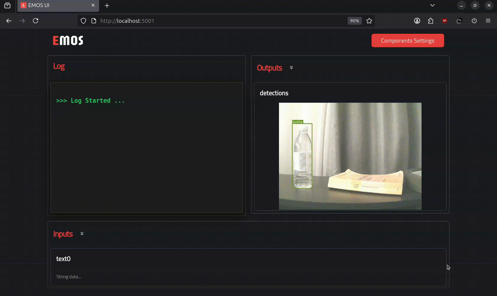

Using the Dynamic Web UI#
The Dynamic Web UI brings an entirely new level of system visibility, control, and ease of use to Sugarcoat Recipes. Built with FastHTML and MonsterUI, it automatically generates a responsive, extensible web interface for any Sugarcoat recipe — eliminating the need for manual front-end work.
With zero configuration, your ROS2 system instantly becomes a fully monitorable and configurable web application, complete with real-time data streaming and visual feedback.
Key Capabilities#
The Dynamic Web UI acts as a universal dashboard for your Sugarcoat recipes. Once enabled, it introspects your recipe’s Components, Inputs, and Outputs, and automatically builds a front-end to match your running system.
You can view, control, and debug every part of your ROS2 application directly from the browser — no manual HTML, JavaScript, or dashboard setup required.
Automatic Settings UI Dynamically generates interfaces for configuring the parameters and settings of all
Componentsused in your recipe.Auto I/O Visualization Automatically builds front-end controls and data visualizations for all defined UI
InputsandOutputs.WebSocket-Based Streaming Provides bidirectional, low-latency communication for text, image, and audio data streams.
Responsive Layouts Uses grid-based, adaptive layouts for clear visualization of system elements, optimized for both desktop and mobile.
Extensible Design Developers can extend the UI to support custom message types, interactive widgets, or bespoke visualizations.
🚀 Automatic UI Generation in Action#
Lets see the Dynamic Web UI in action by automatically generating a fully functional, real-time interface for interacting with your Sugarcoat recipe.
In the example below, we show how to enable the UI directly within a recipe to send and receive text messages, visualize detections, or stream live camera images from your robot — all without writing a single line of code.
For a complete, real-world example, see how a similar UI is used in the VLM agent recipe from EmbodiedAgents.
Step 1 — Define Your Topics#
Begin by declaring the topics that represent your system’s inputs and outputs:
from ros_sugar import Launcher
from ros_sugar.io import Topic
# Configure your Topics
image_topic = Topic(name="image_raw", msg_type="Image") # the robot camera topic
detections_topic = Topic(name="detections", msg_type="Detections") # a detections component topic (see EmbodiedAgents)
text_query = Topic(name="text0", msg_type="String")
text_answer = Topic(name="text1", msg_type="String")
Step 2 — Define your Components and Initialize the Launcher#
# Configure your actual components here
# my_component_1 = ...
# my_component_2 = ...
launcher = Launcher()
# Add your configured components to the launcher
# launcher.add_pkg(
# package_name="my package",
# components=[my_component_1, my_component_2],
# multiprocessing=True, # Optionally enable multi-processing
# )
Step 3 — Enable the Web UI#
Enable the Dynamic Web UI by calling enable_ui method on your Launcher instance. In this example:
The
text_querytopic is set as a UI input, allowing the user to send text messages (publish to ROS2 topic) directly from the browser.The
text_answeranddetections_topic(orimage_topic) are UI outputs, meaning the UI automatically subscribes to these topics and displays messages in real time.
launcher.enable_ui(
inputs=[text_query],
outputs=[text_answer, detections_topic],
)
# Bringup you recipe
launcher.bringup()
Resulting Interface#
When the recipe runs, a dynamic web interface like the one below is automatically generated — ready to send, receive, and visualize data from your components.

Note
The UI also automatically renders configuration panels for all registered components, allowing you to inspect and modify parameters in real time — no manual UI setup required.